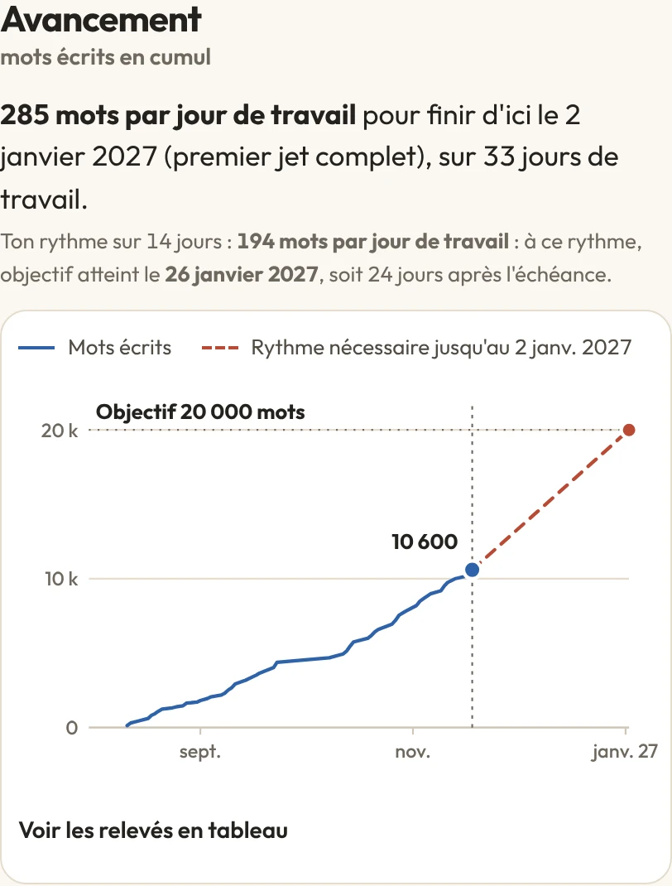
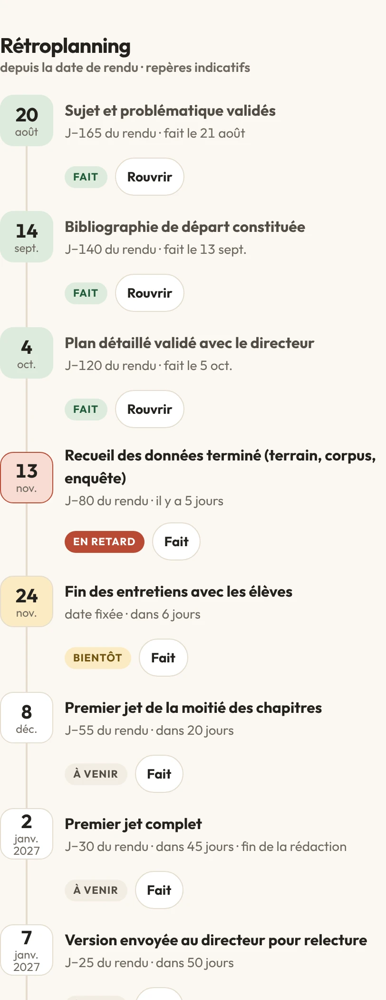

Mémoire de master
Combien de mots par jour ?
Pour finir le premier jet à temps.
Le calcul · exemple fictif
= 285 mots par jour.
Planning de mémoire ou de thèse
Votre rythme réel, comparé.

Capture de la démo · données fictives
Rythme sur 14 jours : 194 mots par jour.
= 24 jours de retard sur l'échéance.
Rétroplanning
Tout part de la date de rendu.

Capture de la démo · données fictives · repères indicatifs
Un chiffre par jour, pas une angoisse.
Planning de mémoire · démo gratuite · qm-engineering.fr
qm-engineering.fr